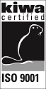
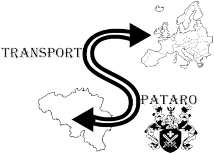
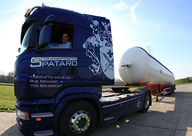
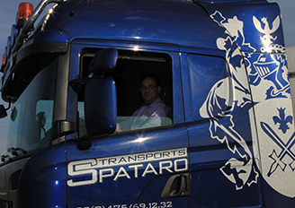
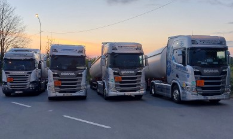
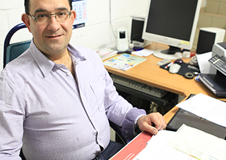
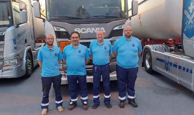

Depuis 1998, nous livrons vos marchandises dangereuses et délicates par voie routière, nous assurons des prestations professionnelles dans le strict respect des normes en vigueur.

Transports Spataro
Nous transportons en toutes sécurités.
Rue du Roeulx 66
7110 Maurage
N° TVA : BE0468.246.219
info@spataro-transports.be
Rue du Roeulx 66
7110 Maurage
N° TVA : BE0468.246.219
info@spataro-transports.be

Nous livrons dans toute l'Europe.
En Europe, l’acheminement de produits dangereux est rigoureusement réglementé car le moindre incident peut engendrer d’importants dégâts humains, environnementaux et matériels.
C'est pourquoi, nous sommes particulièrement exigeants quant à la prévention des risques. Nous prenons, en tout temps les mesures adéquates afin de vous offrir un service fiable et sécurisé.
Nous ne transportons que les produits pour lesquels nous sommes habilités, en conformité avec les normes ADR Accueil européen relatif au transport international des marchandises Dangereuses par Route, qui régissent le transport des matières dangereuses en Europe.
- Belgique
- Pays-Bas
- Luxembourg
- France
- Allemagne
- Autre... Plus d'infos





